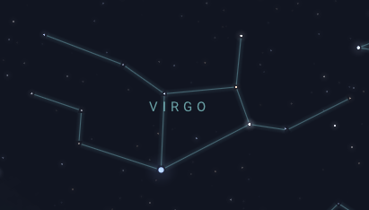

| Constellation | Description | Image |
|---|---|---|
| Ursa Major | Ursa Major, also known as the "Great Bear", is the brightest constellation visible in Spring from the northern hemisphere. This is mainly due to its seven bright stars, making it one of the most recognizable shapes at night. (look closely, do some parts seem familiar???) |

|
| Ursa Minor | Ursa Minor, also known as the "Little Bear", is a smaller version of Ursa Major. At the very tip of its handle is Polaris, the North Star. | |
| Leo | Leo, also known as the "Lion", is one of the easiest constellations to identify because of its unique sickle/question mark shape for the head. The brighest star in Leo is Regulus, and it is located at the base of the lion. It is one of the zodiac constellations. | |
| Bootes | Bootes, also known as the "Herdsman", can be identified by its sword like shape. The fourth brightest star in the night, Arcturus, sits at the base of the constellation. It is located directly to the right of Ursa Major. | |
| Virgo | Virgo, also known as the "Maiden", is the second largest constellation in the sky. It's home to Spica, Virgo's brighest star. You can spot it in the night sky easily because of its distinct blue colour, and it is also the largest zodiac constellation. |  |
| Hydra | Hydra, also known as the "Water Snake", is the largest constellation in the sky. Although large, its stars are hard to see, so look out for Alphard, the easist one to spot. |
For more information, go to stellarium.org.
Back to top.
Copyright © 2023 Andrew Li